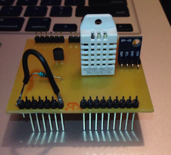

Estação Meteorológica
Curso: Instrumentação e Medição
Período: 1° (ciclo básico)
Data: 9/Maio - 14/Junho
Duração: 1 mês
Descrição: Com três sensores tivemos que montar uma estação meteorológica fazendo o circuito elétrico, testando na protoboard e fazendo as devidas calibrações em cada sensor. Para fazer isso, foi necessário usar o arduino para fazer o código de cada sensor. Com tudo calibrado, e o código pronto e funcionando, tivemos que fazer uma placa de circuito elétrico, PCB, e soldar os componentes nela. Fizemos também um relatório com todos os calculos usados e como foi o processo durante o trabalho.
Conhecimentos exigidos: programação em arduino; conhecimentos de eletrônica e circuitos elétricos; produção de PCBs por CAD e CAM e saber fazer um relatório.
